Home
Mood board for the lyric video. Horizontal, 1920x1080, 30 frames a second. Kit: video-pipeline/styles/stipple-lyric, new for this run. Five key frames.
The reference, barsat-song, is one still title card held for its whole run: cream paper, a stippled ink drawing, one word in dark red. It gives the ground, the ink, the red and the way of drawing. It shows no lyric on screen, so how the lines are set and lit comes from the brief and the script, and has nothing in the reference to be held to.
What changed since the first board
The first board was drawn for the script before its review. The script was revised while it was being drawn (nine beats, a window on the sheet from the first frame, a last frame that reads “Home.”), and the script reviews left notes for this stage. This board is redrawn for the revised script.
- New key frames. The title at 0.0 s and again at 1.4 s with the whole first line faint; the first line half spoken; the payoff one word from its end; the last frame with “Home.”.
- The window is on the sheet from frame 0, unlit: a closed square of dots with a cross-bar and a sill. It lights when the dark gathers round it.
- Larger type. 160 px, up from 136: ascenders are 10.8% of the frame height, up from 9.2%. The left edge moved from 12.5% to 7.9% of the width to make room.
- Darker faint ink. 38% of full ink, up from 30%, tested at phone size.
- Punctuation as the lyric has it. The first board dropped full stops; the revised lyric needs its comma, its stops and its lower-case “the”.
- The road’s first stretch rises toward the window from its first dot.
- The kit gained a way to reset a word in place (“home” to “Home.”) and to bring one row of a line in later than the other.
Palette
Measured: reference against our key frames
| barsat-song | our key frames | |
|---|---|---|
| Paper, mean | #dbc9b0 | #dac9b0 |
| Paper, centre to corner | #e0d1bf to #cfb899 | #e0d1be to #d0b995 |
Ground as palette.py names it | #ded0ba (44%), then #d7c6ab (34%) | #d7c5aa (30%), then #dbcbb4 (29%), #dfd0bc (26%) |
| Ink (darkest 0.5%) | #0b0100 | #0b0100 |
| Accent, hue | #7a1713, 3.0° | #7a1713, 2.6° |
| Brightness, saturation | 0.758, 0.214 (“muted”) | 0.781, 0.202 (“muted”) |
| Dark ink, share of frame | 3.7% | 0.5%, 0.5%, 1.0%, 2.8%, 2.1% (mean 1.3%) |
| All ink, share of frame | 6.3% | 0.6%, 1.8%, 1.9%, 4.0%, 3.1% |
| Red, share of frame | 1.2% | 0.38% as “home”, 0.44% as “Home.” |
| Main type, height | 14% of the frame (one word) | ascenders 10.8%, x-height 5.9% (rows of up to 16 characters) |
| Type starts at | 12.5% of the width | 7.9% of the width |
| Margins: left, right, top, bottom | 12.5%, 8%, 17%, 12% | 8%, 7%, 20%, 11% |
The ground row looks further apart than it is: the tool splits our paper into four tones and the reference’s into three, so its “ground” names a different slice of the same sheet. Ring by ring from centre to corner, no part of our paper is more than 4 levels from the reference’s. Our frames carry less ink than the reference’s card at every point; see “Not reproduced”.
Key frames
Left: the reference frame it answers to. Right: ours, at the same size. The reference is the same picture at every moment, so the three reference stills below (0.5 s, 92 s, 184.5 s) are one card.
1. Title, 0.0 s: the first frame
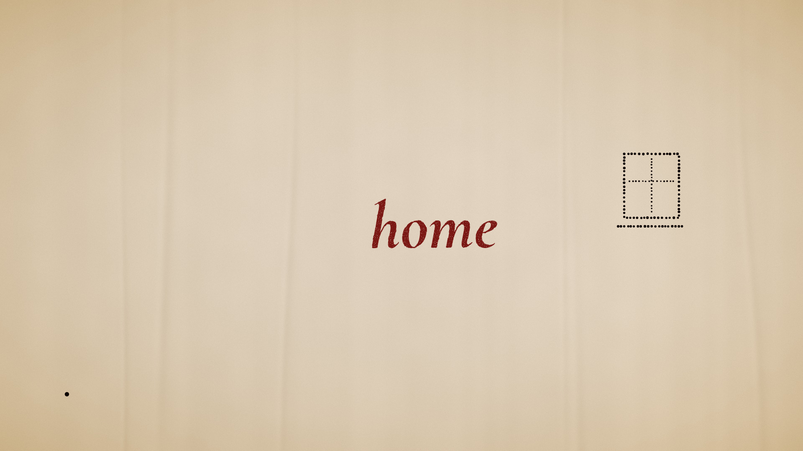
2. Title, 1.4 s: the whole line, faint
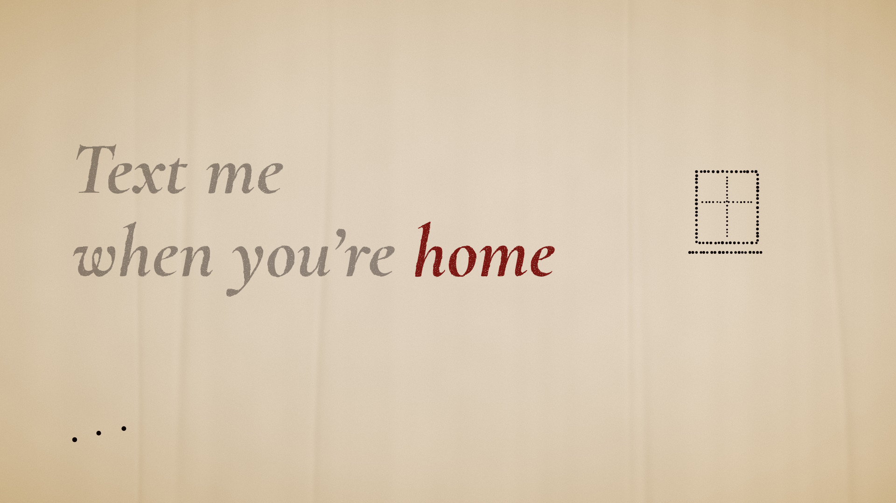
3. Ask: a line half spoken
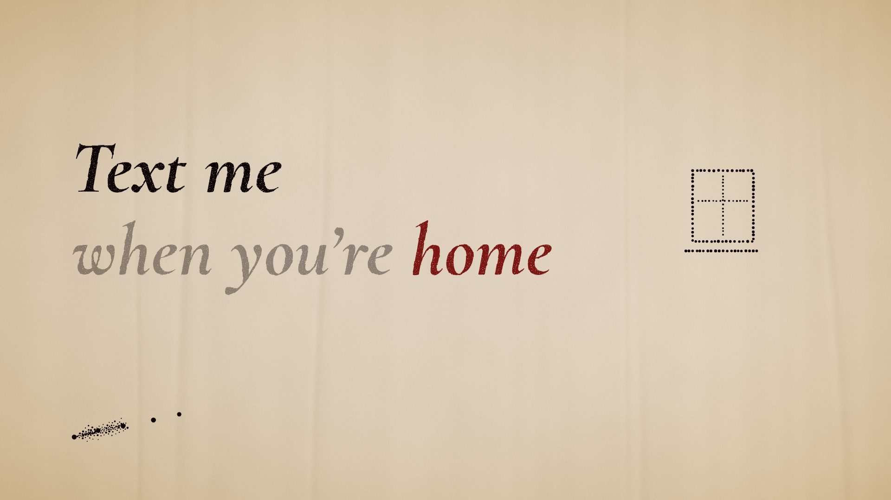
4. Love: the payoff
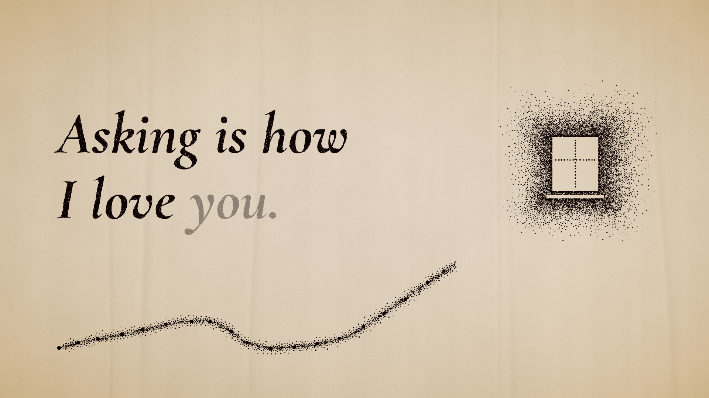
5. Home: the last frame
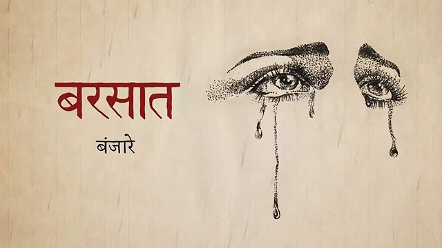
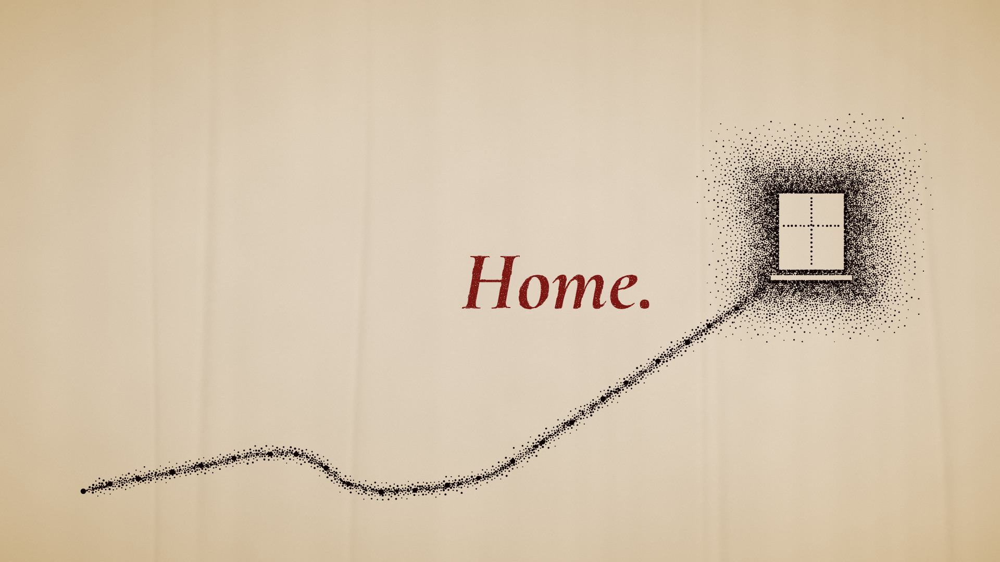
At phone size
The five key frames at 390 px wide, which is how a horizontal video sits on an upright phone. Shown at exactly that size on a wide screen. The questions from the script reviews: does frame 0 read as a red word and a window; can the faint line be read; can a faint word be told from a lit one.
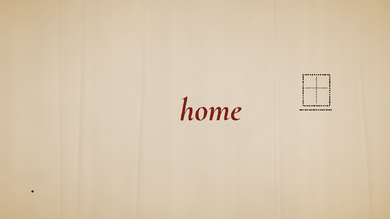
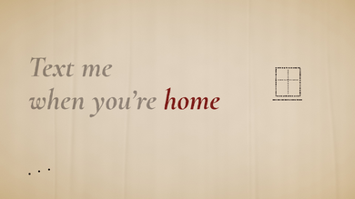
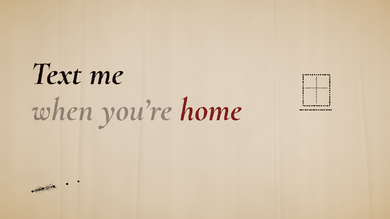
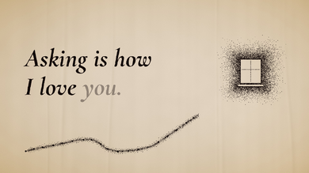
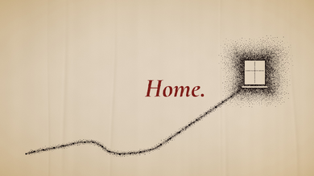
The window
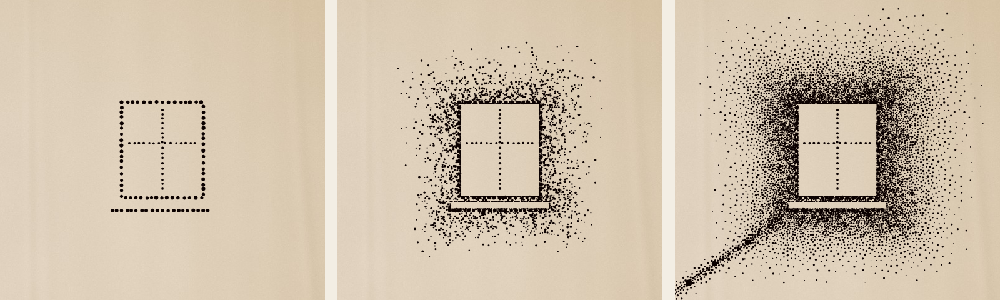
Beats without a key frame
Three more finished frames, drawn with the same code (checks.html), for the lines whose punctuation matters and for the window part lit.
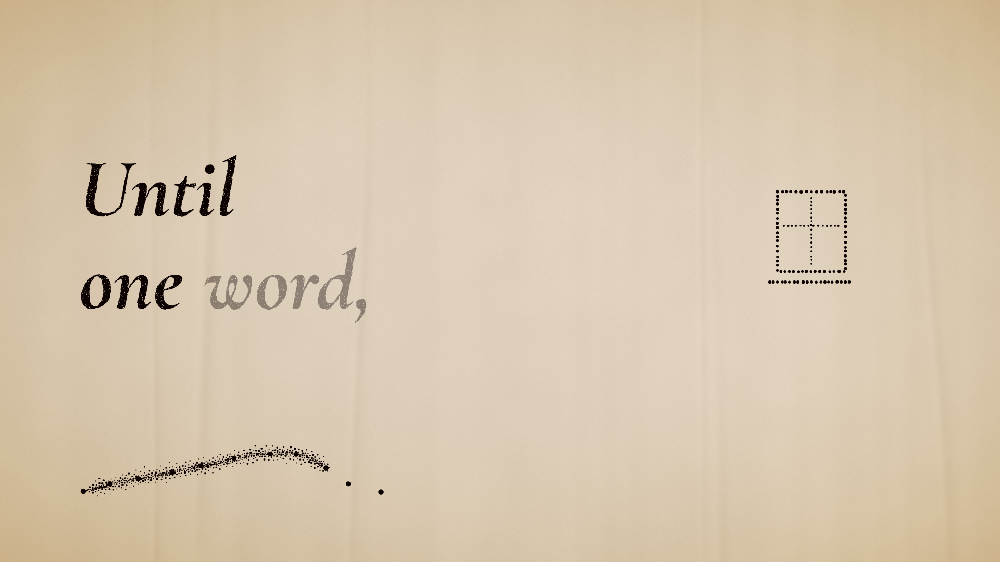
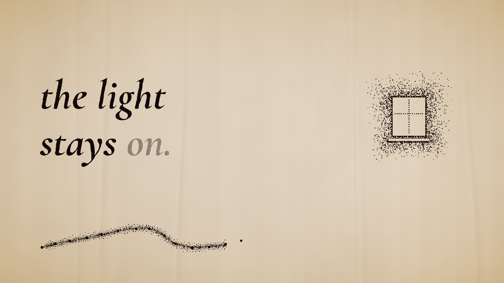
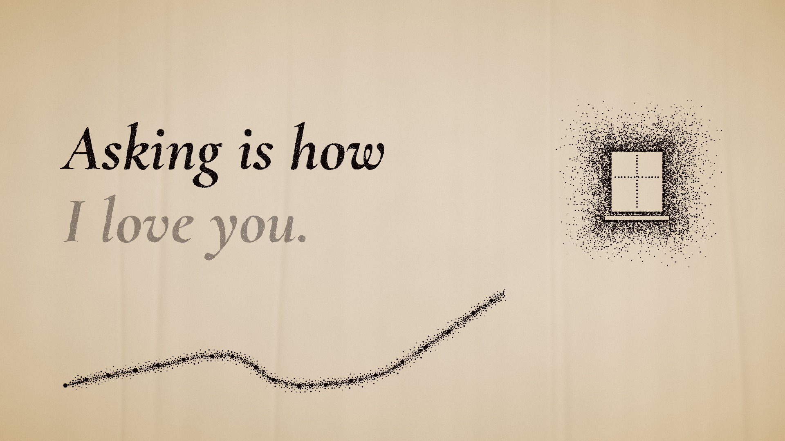
Type
Text me when you’re home
- Cormorant Garamond italic, weight 700, shown here at the film’s size: 160 px on a 1080 px frame, rows 178 px apart.
- Three states and no others: faint (ink at 38%) before a word is spoken, full ink once it has been, red for “home”.
- Two rows, left edge at 7.9% of the width, baselines at 38.4% and 54.9% of the height. The same place for every line.
- Capitals and punctuation exactly as the lyric has them: no stop on the refrain, a comma after “one word,”, a lower-case “the light”, and “Home.” on the last frame. Curly apostrophes.
- The edge is slightly rough with pin-holes of paper in the ink, as if printed on the sheet.
- No other text anywhere: no caption, no credit, no label, no small second line.
Rules
The accent
- Red means home. It is the word “home”, including “Home.”, and nothing else.
- The lit window is bare paper, not red.
The lyric line
- One line on the sheet at a time, whole and faint from the first frame of its slot.
- Each word turns to full ink as it is spoken, over a tenth of a second.
- A lit line stays through the breath, then the next line replaces it in one frame.
- The first line arrives early, faint, at 0.5 s, in front of the red word.
- “home” is red from the first frame through the second line and swells once each time it is spoken.
- “I love you.” arrives, faint, when “Asking is how” ends, and is lit after the pause.
- In the last line “home” starts faint red and turns full red as it is spoken. The ink words leave over 0.4 s, then the word is redrawn in place as “Home.” with one swell.
Drawing
- Dots only. No drawn line, no filled shape, no grey: an edge is a row of dots and tone is how close they stand.
- One drawing for the whole film: the window, the dark that lights it, the road, and the larger steps that land ahead of the road.
- The window’s pane and sill are paper left alone.
- The road rises toward the window, bends once, then runs straight to the sill.
Composition
- One sheet from the first frame to the last. A new line is new words, never a new scene.
- Words on the left, window on the right at 81% across and 41% down, road along the bottom.
- Nothing nearer an edge than 7% of the width or 11% of the height.
- Most of the sheet is bare: ink is 0.6% of the frame at the start and 4% at the fullest.
Motion
- The sheet does not drift or zoom. Words change state in place and never travel.
- Dots land and stay. Something lands in every breath: no stretch over about 0.6 s with nothing changing.
- The last dots of the dark land through the final hold.
Transitions
- Cut at the start of each line’s slot. On one continuous sheet only the words change.
- No dissolve, iris or wipe. The reference has none.
Never
- A second colour, or red on anything but “home”.
- A second face, weight or size of type.
- Punctuation or capitals the lyric does not have.
- A drawn line or a filled shape in the drawing.
- Gradients, drop shadows, glows.
- More than one lyric line on the sheet at once. Captions, labels, credits.
- Anything from the reference’s card: eyes, tears, falling drops, rain marks, its lettering or its arrangement.
How the drawing grows
Share of each part on the sheet at the end of each beat. The window’s outline is there throughout; “dark” is what lights it.
| Beat | Line | Road | Dark | Built from |
|---|---|---|---|---|
| title | home, then the faint first line | three steps | 0 | key frames 1 and 2 |
| ask | Text me / when you’re home | 0.17 | 0 | key frame 3 (taken at 0.08) |
| again | Text me / when you’re home | 0.33 | 0 | key frame 3, lit a second time |
| until | Until / one word, | 0.47 | 0 | the extra frame above; one step lands on each word |
| light | the light / stays on. | 0.60 | 0.45 | the extra frame above (dark 0.3) |
| fine | I know / you’re fine. | 0.80 | 0.45 | the light frame with the line swapped; the road as in key frame 4 |
| asking | Asking is how / (I love you.) | 0.80 | 0.50 | the extra frame above |
| love | Asking is how / I love you. | 0.92 | 0.80 | key frame 4 (road 0.8, dark 0.62) |
| home | Text me / when you’re home, then Home. | 1 | 1 | key frame 3 for the line, key frame 5 for the end |
Where this departs from the script
- Row two of the payoff line. The script has “I love you.” on the sheet in faint ink from the start of “Asking is how”. Here it arrives, faint, when those three words end, and waits through the pause. That is the retention review’s note. Either is one attribute to the producer.
- The title’s “home” is mid-sheet (46% to 62% of the width), not in the left half. It is the last word of a 16-character row that starts at the left margin.
- The unlit window is a closed outline of 115 dots, not “a few sparse dots”, which read as specks at phone size.
- Single larger dots run a little ahead of the road in every beat, not only in “Until one word,”.
Not reproduced
- The reference’s weight of ink. Its card is 6.3% ink from its first frame; ours is 0.6% at 0.0 s and 4.0% at the fullest. The script opens on a nearly bare sheet and asks for a small window.
- Its type size. Its one-word title is 14% of the frame height. Our rows hold up to 16 characters, so ascenders are 10.8% of the height; at 14% the refrain’s second row would reach the window. Red covers 0.38% of the frame against 1.2%.
- A brushed face. The reference’s title is hand-brushed. Ours is a bold italic serif with a roughened edge: the kit has no brush-lettered face.
- The scan. The reference’s paper has sharper creases and short dark flecks. Ours has soft creases and no flecks, which read as rain on the reference.
- Any check of the lyric setting against the reference. It shows no lyric, so the faint-then-lit lines can only be judged against the brief.